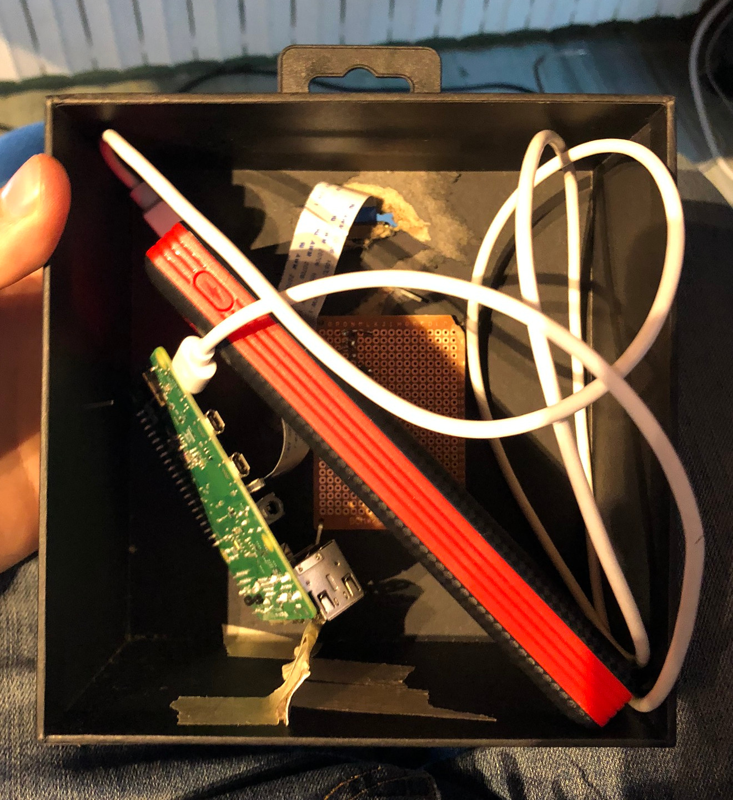

Personal Projects
Here, you'll find some of the projects that I have started, finished and that I have the right to publish.
Link to Github
keywords: [Chess, C++]
A fully functional Chess Engine written completely from scratch in C++
Link to Github
keywords: [Swift, Python, Django, iOS]
During a 3 days hackhathon, we developed a mobile app to help local stores gain visibility.
Link to Github
keywords: [Python, Computer Vision, Deep Neural Network]
In this project, I had to analyse a video of a robot moving on top of numbers and operators to deduce an equation. I succedeed the project and its additional challenge and scored the best possible grade.
Link to Github
keywords: [Python, C++, ROS, Computer Vision, Deep Neural Network, Lidar]
Robottle is an autonomous robot able to collect plastic bottles in a random environment. It was entirely done in a team of 3 students. This project was showcased by NVIDEA as proof of concept for what a Jetson Nano Board can do !
Link to Github
keywords: [Python, Pandas]
Data Science Project, rewarded as in the 'best 10 course projects' (out of 138 projects).
keywords: [Python, Computer Vision, RPi]
I love animals but it's difficult to take good pictures of them. So with my friend, we worked one weekend to design an animal trap
Link to Github
keywords: [Chess, Rust]
A fully functional Chess Engine written completely from scratch in Rust
Link to Github
keywords: [Swift, iOS, Mobile App]
This project is a mobile game that I did with my brother when we were younger. Though it may not be the most professional recommendation, I had learned a lot while working on this enormous remake of the very famous Mine Sweeper.
Link to Github
keywords: [Js, React, Gatsby]
Well, this is it ! My personal website.
keywords: [Java, Android, Mobile App]
As you may have understood it, I like hiking. This is an Android App to track your recordings using GPS data and connected devices, then save them using Google's Cloud services.
Link to Github
keywords: [Python]
A fully functional yet minimal gauss newton solver
Link to Github
keywords: [Python, RPi, Arduino, IoT, PCB, Design]
China Hardware Innovation Center, 1 year and a half long project in a team of 5 students from 3 different schools, to design and create a connected object.
Chess Engine in C++
I have written a fully functional Chess Engine, starting from scratch and using nothing else than the standard library in C++ and SFML for graphics. You can easily try it out in your own computer by compiling the project.
It was pretty difficult to finish the project, there was many challenges. Here's a few of the highlights of the project - A lot of optimisation was required. Since a chess engine has to go through millions of positions quickly, you have to think about optimisation, a lot ! It was pretty new for me. - The data-model has to be efficient, but also, easy to use ! The rules of chess are not so trivial, so they have to be thought along with the data-model - The tree search of the solver, well, is quite a big tree. I have implemented alpha-beta prunning search, and it works pretty well !
The Vici project (hackathon)
Vici was realized in a lapse time of 3 days, by the end of the weekend there was a fully functionable iOS app, a website done classicaly (HTML + JS + CSS) and a Python server coded in Django running on a rapsberry pi. Unfortunately, this project wasn't kept alive much longer after the hackathon though you can still access its project page at this link.
I was in charge of many parts of this project, from ideation to almots all of the iOS programming. The only thing that i didn't take part of was the website development.
Also, feel free to check this video presenting the project !
Image Analysis Course Project
The work involved to work with videos in Python, Object Extraction using state of the art computer vision to detect numbers and operators on the ground and Object Classification using a tuned Neural Network that is color independant and rotation invariant, using several Deep Learning methods.
Robottle
Robottle was made for an academic event hosted at EPFL, where autonomous robots have to collect plastic bottles in a random environement and bring them back to a recycling area.
Our robot featured states of the art technologies, including a Lidar to run SLAM algorithm, a camera with Deep Neural Network for object recognition. You can see more about our robot with this video that we made to illustrate our project.
After I was contacted by NVIDEA developer teams, Robottle became a showcased project and gained its own little referenced on the NVIDEA official https://developer.nvidia.com/embedded/community/jetson-projects#robottle
Applied Data Science
Check out the webpage of this project: click here
During a course of Data Science at EPFL (CS-401), in a team of 3 students we had to first replicate a paper and then to do a creative extension of the results previously illustrated. The bigger part of the project consituted this extension.
Our team was assignated a paper about an online strategy game called Diplomacy, and we conducted an in depth analysis of this game using a huge dataset that we were glad to acquire online. I was in charge of most of the data processing pipeline to extract meaningful features or plots from this dataset that contained 22'000 games (knowing that each game is... months long !)
Check out this video which presents most of the results.
Camera Trap with a Rapsberry PI
During the lockdown, I was observing at birds at my window and wondering that I'd like to see them from closer. I also happened to be in possetion of a Raspberry Pi with a super cool Pi camera v2.1 NoIR.
So, with my friend Johan (You can check out his own website, he is a great physicist and my adventure companion, go at this link) we decided to 'build' (that's a big word) a little box, equippe it with: the raspberry pi, some IR lights that we got from some old remotes, the camera and a phone battery.

Though it is really not great design (it was mostly for fun), we would take some great pictures of birds and it was a good practise of computer vision. In a few words, the algorithm looked for difference between the current image and the mean image of the stream.
Chess Engine in Rust
I wanted to learn Rust, and I had loved to write my first chess engine (in C++). So this is my attempt to do it in Rust. It was surprisingly easier than C++.
With this engine, I choose a memory efficient representation of a chess-board: 7 integers are sufficient to represent a full chess position (including the special rules for castling and for en-passant). Using such a low-memory approach, it's extremely cheap to perform deep copies of chess games and therefore have a simple chess solver.
Mine Hunter
When I started working on this project, I knew not much about programming, Swift, or software construction. It took my brother and I more than a year of learning to have this game.

It is a remake version of the famous game 'Mine Sweeper' that included the following features: - 2 new kind of blocks: hexagonals and triangulars - infinite games or a story of several puzzles - additional difficulties
Working with the design of this game was very difficult ! The geometry of the game is really not so trivial when it was about hundreds of triangles. Unfortunately, the game is not available in the AppStore because one has to pay each and every year for that. But you have access to all the code, and it really works !
My old personal website
This website was something I had in my mind since a long time. Doing it fully in React was really a great opportunity.
InTrek, a Strava-like multi-sport application
This project was done for a course at EPFL. In a team of 3 students, we developed an mobile app over Android to be your 'hiking partner'.

The app featured a connection with a smart-watch to record data such as chocs or average acceleration. It also used GPS data to compute speeds or distances. Here are some layouts from the user experience !

Minimal Gauss-Newton solver
I did this super simple solver to explore the mechanics of the Gauss-Newton algorithm in need of understanding. This was the result of this work. The only depandency is numpy and it is absolutely easy to use it.
China Hardware Innovation Center
China Hardware Innovation Center (CHIC) was a year and a half long project in a team of 5 skilled students (2 engineers, 2 design students and 1 business student), where we had to entirely designed from scracth a connected device, in our case a smart sensor for home plants, that can transform any plant into a highly sensitive touch sensor and generate beautiful visuals.
For the first year of the program, we worked on the creation of a sensor (3D printed box, PCBs) which allowed minimal viable performances (the sensor could detect when a plant was being touched). The second year of the program was focused on a much more technical aspect: the development of a new sensing technology that uses machine learning to not only detect when a plant (or actually, any object) is touched, but to also eventually detect how or where the object is being touched.
The work involved many aspects, a lot of them being technical: programming microcontrollers, designing PCBs and producing them, fast prototyping.

Though we also had to work in a team and this came with its challenges and many opportunites to work my soft skills. This project was definitely one of the highlight of my student career at EPFL.